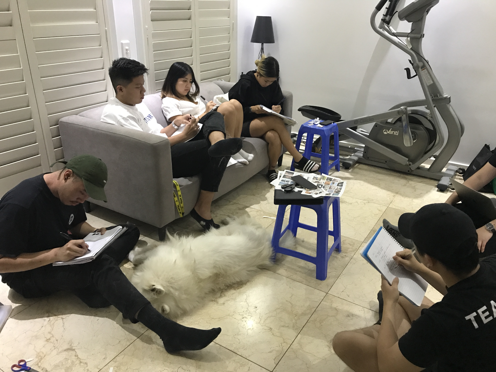
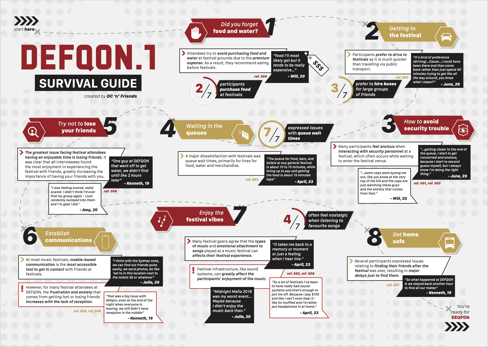

MeshMe
Overcrowding at festivals has contributed to a dismal experience as participants were made to wait for a prolonged amount of time for needs. It resulted in increased chances of participants becoming separated from their friends. We created a mobile application mockup that aims to provide a means by which attendees can locate and reunite with their friends promptly.
Brief: User Experience
For a museum, theatre or festival in Sydney design a digital/tangible/spatialexperience that builds upon the content they offer (e.g. performances, collections). It should improve the visitor experience and help the institution to engage with new audiences, or affirm their relationship with existing ones. The experience should be closely interwoven with the context; it could not exist without that environment. The final deliverable should show both an overview of the user experience, and one detailed touchpoint.
Role
Class
User Experience Design Studio (12 weeks)
Team
Problem
A major pain point at festivals, such as DEFQON, was the instance of losing friends or themselves. The user experience quickly shifted from being enjoyable to prioritising locating their friends. Losing friends was perceived as a negative experience, one was filled with frustration and anxiety. A major gateway to communication at a festival is through personal mobile phones, however, there are often issues with mobile cell reception.
Solution
The solution is the MeshMe app concept. The concept aims to reduce the chances of allowing festival attendees becoming separated from their friends through an establishment of connections with surrounding phones. MeshMe uses other mobile phones to ping the users messages to get through to its final receiver. The concept acts as a means to solve the lack of reception issue whilst tacking the problem of losing each other at festivals.
Goals
Identify Issues with DEFQON.1 through Primary Research Methods
We wanted to identify the issues festival attendees has with DEFQON.1 and gain a deeper understand of why the issues occurred.
Provide a solution to provide a more enjoyable experience.
Educating users would allow them to maintain their own energy usage without the need of asking assistance from others.
Understand UX
A personal goal was to understand how User Exprience can uncover issues and provide insights through face-to-face interactions (qualitive research) over quanititve research methods.
Process

Research
Focus Groups
A research plan was created to clearly indicate the steps that were required to ensure effective research was conducted. The research plan can be found here. The research objective was to discover how the target audience experiences a music festival, to identify any any issues they face and how to improve the overall experience for the target audience.
The research was conducted in 2 separate focus groups; first group with 4 people and the second group with 3 people. The research was conducted on people aged 18-25 that have attended DEFQON at least once.

We used a sensitising process to focus on the target audience’s Social Habits, to understand their behaviour, lifestyle, and how they interacted with others. We used a sensitisng booklet before the context mapping session to ease the target audience into answering the context mapping session questions.
Participants gave detailed answers to our questions, which meant that the session could move forward smoothly as most of our follow up questions were accounted for. Discussion between the participants in between exercises provided additional information that allowed for the production of valuable insights about the topic in question
Analyse
Affinity Diagramming / Statement Cards
Through the use of affinity diagramming and statement cards, there were 7 major factors that contributed to the bad experience at DEFQON:
Research Conclusion
A major dissatisfaction with festivals was queue wait times, primarily for lines for food, water and merchandise. Attendees are very comfortable with the standard 10 minute wait for entry into a festival. For many festival attendees, the frustration and anxiety that comes from getting lost or losing friends increases with the lack of reception.
The greatest issue facing festival attendees having an enjoyable time is losing friends. It was clear that all interviewees found the most enjoyment in experiencing the festival with friends, greatly increasing the importance of having your friends with you. Mobile-based communication is the most accessible tool to get in contact with friends at festivals.
Many participants feel anxious when interacting with security personnel at a festival, which often occurs while waiting to enter the festival venue. Many festival goers agree that the types of music played at a music festival can enhance and improve their experience. The sound system at festivals can greatly affect the participants' enjoyment of the music. The emotional attachment to songs plays a large role in a festival attendees' experience.
Participants prefer to drive to festivals as it is much quicker than travelling via public transport. Also, driving is preferred due to public transport scarcity in the later hours of the night. Attendees try to avoid purchasing food and water at festival grounds due to the premium expense. As a result, they usually eat before festivals.
The research appendix can be found here
Visualisation
From analysing the researching and drawing conclusions, we were able to illustrate a visualisation that would assist and benefit DEFQON festival attendees in improving their experience.
The DEFQON 'survival' guide acts as a guideline for attendees to help decrease the chances of them having a poor experience by providing tips and services. The visualisation acts as a checklist for the attendees to ensure nothing is forgotten for their festival experience.
Conceptualisation
Aim
The aim of each idea was to manage overcrowding to improve the experience of DEFQON attendees.
Vision
From our previous research, a common issue that arose between our participants was the overcrowding in areas at festivals such as the entrance of the festival, the merchandise line and the festival floor. This issue contributed to an unenjoyable experience as participants found it difficult to navigate around the festival without frustration. It also resulted in an increased chance of becoming separated from friends in the crowd.
Our target audience are young adults aged 18 to 25, as this is the demographic that DEFQON.1 tends to attract. We aim to improve the experience of DEFQON.1 attendees by attempting to make queues less boring and frustrating, as well as implementing methods to aid people in being reuniting with their friends more quickly. Through our current research, we hope to develop effective methods to reduce human traffic to allow easier navigation around the venue, and ultimately improve the experience of our target audience at the festival.
Justification
Festivals attract large masses of people, and this can cause various inconveniences for the attendees. These include having to wait in queues for a prolonged period of time, and losing friends within the crowded venue. The experience of attendees at festivals can be negatively influenced by these inconveniences, therefore the implementation of these methods would reduce the despair associated with these inconveniences which may improve the experience as a whole.
The first inconvenience is the typically long queue times for entering and purchasing different items, such as food, water and merchandise. Our research showed that all the participants expressed negative reactions towards waiting in queues, whether it was for entry or other lines. However, an interesting discovery was that queues for entering festivals were expected from participants were seen as the least cause in despair. The most negative reactions from our research were associated with merchandise, food and water queues.
While the waiting times ranged from 10 - 20 minutes, the waiting times were significantly shorter than the queue times for entry but induced the most frustration. The reasoning behind this frustration is due to the lack of patience of the attendees as they are hungry or thirsty and prefer to satisfy their needs quickly. Furthermore, whilst they are waiting in line, attendees could potentially miss acts that they are interested in, as the queues typically face away from the stages.
As attendees wait in queue, they tend to get bored and frustrated as the queue time is usually a long period of time. During this time, three participants have expressed their negative emotions whilst waiting in line as there is nothing to occupy them. The lines for merchandise have been illustrated as the most frustrating as it has the longest wait times. Although participants are waiting in line amongst friends, they collectively become equally frustrated. Regardless of the reasoning for waiting in line, such as food, water or merchandise, participants despise waiting for an unnecessary prolonged amount of time. The despise for wait times derives from the risk of missing out on multiple acts while waiting in queue.
Ideas
QR Code Games
Making use of QR/AR code functionality to contribute to the reduction in feelings of boredom and frustration whilst waiting in queues. This entails a series of boards scattered along the queue line with up to three different games depicted on them. Each game will have its own unique QR/AR code, and once the user scans it, they will be able to access the game on their device. Thus, attendees can occupy themselves whilst they wait, which may help to take their attention off the long queue.
Self-Serve
Moreover, our research showed that participants found the merchandise queues to be the worst, as there usually was no organised line, and people would push past others to reach the front. One method to remedy this is having a series of screens that allow attendees to order what they want whilst they are waiting. The user will receive a number for their order, and once they reach the desk, they show their number and obtain the corresponding order. This can help to relieve some of the irritation as the attendee knows that their order is being prepared.
Beacons
People attend festivals to enjoy their favourite music surrounded by good company. Many participants stated that their surrounding company greatly contributed to their festival experience. As a result, losing friends can be detrimental to one’s enjoyment at a festival. All participants stated that their experience instantly switched from enjoyment to troublesome due to finding their friends. Several participants also elaborated on how they felt anxious or scared in these situations. Thus, creating methods that help to reduce these negative feelings may improve the overall experience of festival attendees.
One potential method is to have beacons placed around the venue. When attendees walk within a certain range of these beacons, they will be have the option to access an interactive map of the festival on their phone. They can also receive notifications about upcoming acts, and even receive discount codes to use at specific vendors in the festival. This can allow individuals to instantly find out where they are and what the best place for reuniting with their friends would be (Sawyer, 2016).
MeshMe
Furthermore, there is usually no reception at DEFQON festivals due to its location. This makes it difficult to make contact with friends when attendees have gone astray and become lost in the crowd. However, there is an app called MeshMe that may remedy this situation. It allows people to chat with a number of people at the same time without requiring cell reception. However, WIFI or Bluetooth radio needs to be enabled for it to work. The app treats individual phones as routers, and when a message is sent, the app moves from phone to phone to find a good path to the final destination.
The app can only function effectively if a significant number of attendees have it installed on their smartphone (Metz, 2014). Another similar app is called FireChat which utilises Apple’s new multipeer connectivity feature. It enables contact between people who are within 30 metres of each other through Bluetooth connectivity. In similitude to the MeshMe app, other people will need to have the app installed, but not nearly as many as what is required for the MeshMe app, as FireChat functions like other messaging apps (Simonite, 2014).
Justification - MeshMe
Despite being the second highest scoring concept, we have decided to choose the MeshMe app. It has the potential to solve a major pain point uncovered through our research, which is the absence of reception. Moreover, it passed the most important criteria with flying colours, such as being financially and technologically feasible, whilst also being accessible. It is financially feasible as the organisers can hire an expert to formulate the app.
It is technologically feasible as mesh networking already exists. In addition, it is accessible as the app can be downloaded for free by attendees. These three criteria are important as we wanted to ensure that the solution would be financially achievable, as the organisers are already spending a large sum of money to set up the event and create an enthralling atmosphere.
When creating our criteria, we had three main themes in mind, which comprised of feasibility, incentive, and purpose. These themes were important as a concept had to rankly positively across all three to be considered as a potential solution. From this point, we began to brainstorm criteria that would fall under these themes in order to appropriately test our concepts. We then decided to add a few additional criteria which were less important but would be a bonus if a concept was able to rank positively against them.
Since instant messaging has become such an integral part of people’s lives, flow is an important aspect to consider. ‘Flow experience is a condition in which attention can be freely invested to achieve a goal or is an intrinsically enjoyable experience’ (Achyar & Gloria, 2016). Our app is being used in an environment where there is no reception, and getting lost can cause feelings of frustration and anxiety. Thus, within a minimal amount of steps, the user can establish a connection with surrounding phones and have a means of communication, which in turn contributes to an ‘intrinsically enjoyable experience’ by reducing these feelings of frustration and anxiety.
The main feedback from the speed dating sessions was to consider combining the concept with something to improve its usefulness. One recommendation was to introduce signposts around the venue, paired with clear signage, which would provide various options to establish meeting points. We felt that this would be a welcome addition to our concept as it would help to further reduce the feelings of stress and anxiety when attendees are trying to find their friends in a large crowd. In addition, it would greatly reduce the time it takes to find friends in a crowded environment, which means that attendees can quickly return to what they came to the festival to do - enjoy their favourite music with their favourite people.
However, an issue that was raised was the lack of incentive for people to download the app prior to arriving at the festival. The festival has been held since 2012, so attendees may not see the need for downloading an app which has a sole purpose of ensuring they can find their friends. Hence, it is essential that we attempt to add more functionality to the concept. A potential function could be providing the organisers with the ability to send promotional messages to all attendees who have the MeshMe app installed on their smartphone. These messages can be in relation to special offers or discounts, or upcoming performances from DJs that have been highly anticipated.
The MeshMe app concept can potentially allow the DEFQON music festival to reduce the chances of attendees ‘becoming separated from their friends’. This is because the app can ‘provide a means by which attendees can locate and reunite with their friends promptly’, which thus allows attendees to spend less time worrying about locating their friends in the large mass of people, and more time enjoying what the festival has to offer. Furthermore, the combination of the app with clear signage for meeting points around the festival may also contribute to this. The fact that the app functions like a messaging app, it can fulfil the criteria of being a ‘multipurpose concept’. Not only can it be used for finding friends, but it may also be used to send images and videos to one another, and even as a way to pass the time while waiting in a queue for a prolonged period of time.
In conclusion, the MeshMe app was found to be the most suitable solution to the issues uncovered through our research. The fact that the app needs to be downloaded prior to arriving at the festival may be off-putting for some attendees. In order for the app to work effectively, a significant number of attendees will need to have it installed on their smartphones. Thus, it is important to provide an incentive so that those who download the app can experience all the benefits that the app offers.